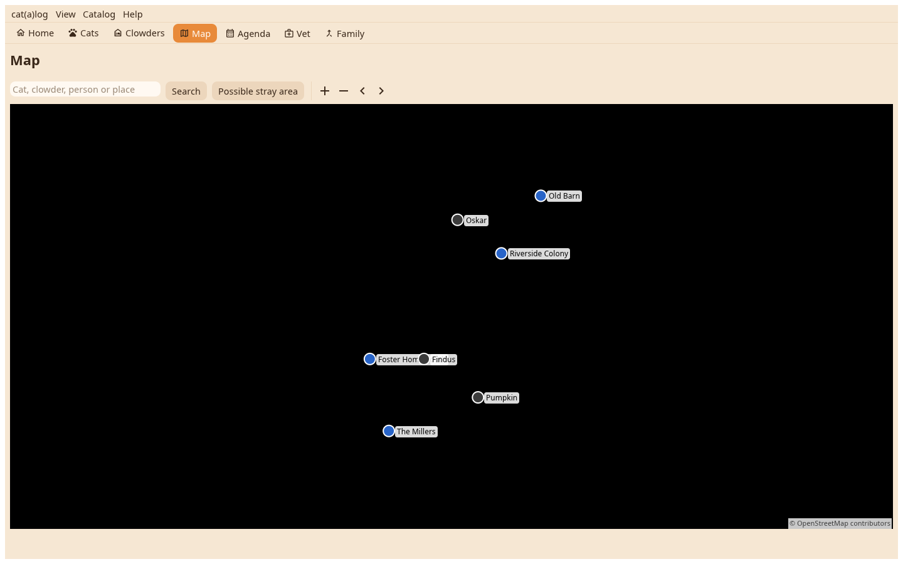

Every cat and place with a position, as on the phone, with the controls a desk has: buttons for closer and further, pin by pin, a box drawn with Shift to zoom into.

A home at its position, a cat at its latest sighting, every poster still hanging as a pin of its own. Things on one spot share a pin with a count; a click lists them under the map, the map icon on a row draws that thing's trail. A click on a single pin draws its trail, a second click opens the thing.
Search jumps to a cat or a home by name, to a person responsible, else to a place the geocoder knows, and says what it found. Possible stray area draws the 500 m circles of a chosen missing cat.
On the ground: record here, seen or flier, for a chosen cat. On a flier's pin: Flier taken down.